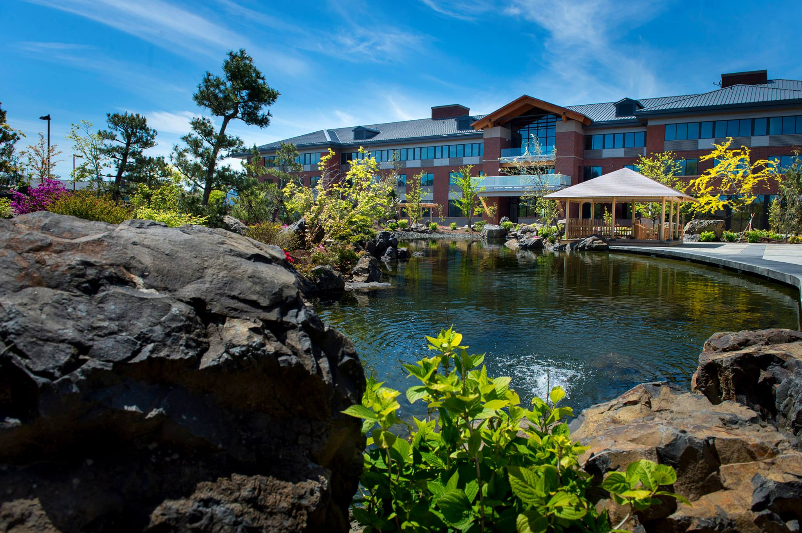

Best Western Boulder Falls
Grows revenue by 43% with iVvy

Grows revenue by 43% with iVvy
The Best Western Premier Boulder Falls Inn in Lebanon, Oregon, is a casually elegant hotel renowned for its one-acre Japanese garden. This serene setting complements 84 well-appointed guest rooms and suites, alongside amenities such as an outdoor heated pool, hot tub, and fitness centre, with dining available at 1847 Bar and Grill. For functions and events, Boulder Falls Inn offers versatile venue spaces including a spacious Conference Center capable of hosting up to 600 people, the Club Room overlooking the garden for smaller gatherings, the Board Room for up to 12 attendees, and other flexible rooms to suit various event needs.
Before making the switch to iVvy Event & Venue Management Software, Boulder Falls Inn managed its property and venue spaces with an older system that caused several operational challenges. Event staff found themselves bound to the office, unable to manage events remotely unless they set up complicated access beforehand. Tasks like updating menus were laborious, sometimes taking over a week for special events like Christmas, and customising essential documents like Banquet Event Orders (BEOs) was difficult beyond basic templates.
Crucially, the system lacked important features, including built-in reporting to track revenue per event space and a central venue function diary, leading to separate, manual event tracking. These inefficiencies led to significant time wastage and missed opportunities, as highlighted by Andi Newcomer, Event Center Manager: "It was clear we were just wasting time and money trying to make an old system work."
Boulder Falls Inn's decision to switch to iVvy venue software, alongside a new property management system, Jonas Chorum, proved to be a game-changer. They chose iVvy for its user-friendly design, flexible event document customisation, and online accessibility.
The team at Boulder Falls Inn quickly found iVvy software to be exceptionally intuitive. "iVvy is incredibly user-friendly," Andi shared. "The interface is intuitive and easy to navigate, even with minimal training. That said, the training itself was outstanding. We trained on two systems around the same time, and the difference was night and day."
"Don't be afraid to reach out to the iVvy team for help. If you're coming from an outdated system, it's easy to fall into the habit of creating workarounds, but with iVvy, that's often unnecessary. I quickly discovered that many of the solutions I was trying to piece together were already built into the system—I just needed someone to point them out. Even if iVvy doesn't currently have exactly what you're looking for, they're constantly updating and adding features. If you share your needs, there's a good chance they'll incorporate them into future updates," Andi advised.
Revenue growth
Reduced work time per week
Time to results
Implementing iVvy Event & Venue Management Software led to significant positive changes and clear improvements for Boulder Falls Inn, including:
"With iVvy's reporting capabilities, we gained visibility into the performance of individual event spaces. This allowed us to identify two underutilized rooms and adjust our marketing strategy to focus on them. As a result, we've seen a 43% increase in revenue from those spaces over the past eight months."
Event Center Manager, Best Western Boulder Falls Inn

Discover how top venues are transforming operations with iVvy. Let's talk about how your team can quote faster and book smarter.
Request a Demo